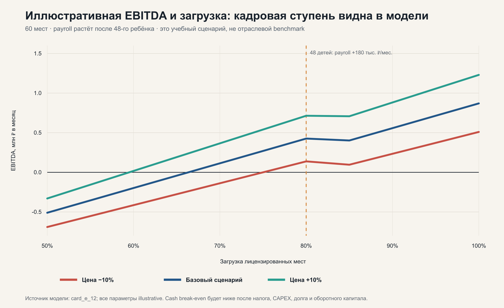
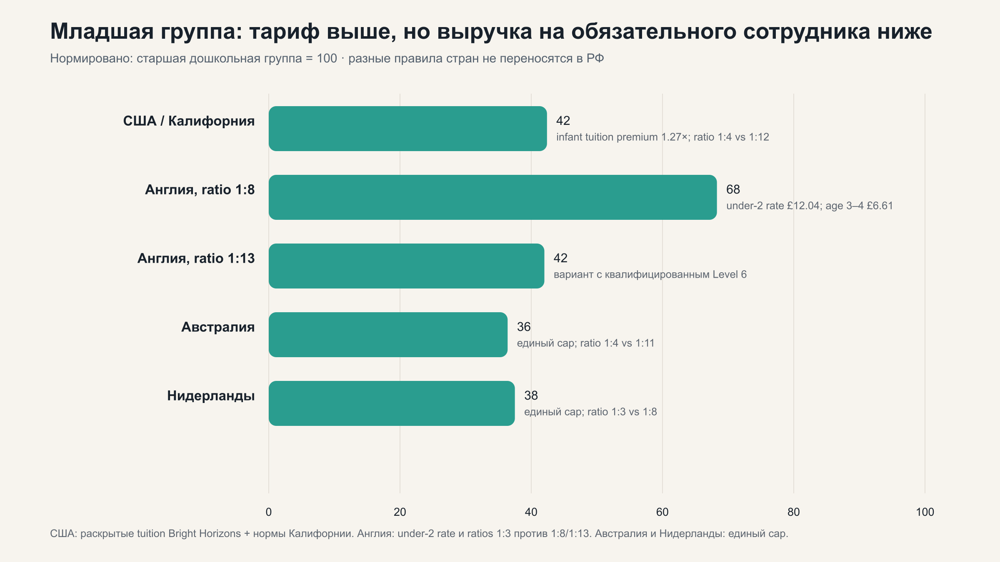
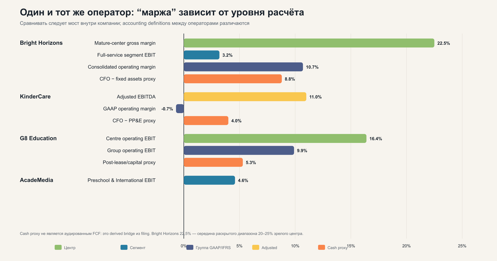

На равной игровой площади норматив даёт на 20% меньше мест для детей до трёх лет. Труд и retention публично не измерены.
Deep research · июль 2026
Экономика частного детского сада
Россия и зарубежные модели: что на самом деле формирует прибыль, кто несёт риск недозагрузки и почему тариф ещё не означает деньги.
Разобрать модель ↓Не инвестиционная рекомендация.
Данные актуальны на 23.07.2026.
Данные актуальны на 23.07.2026.
01 / Главная развилкаЗагрузка ≠
Загрузка ≠
деньги
01законная
вместимость→
вместимость→
02продаваемая
мощность→
мощность→
03оплаченный
объём→
объём→
04собранные
деньги→
деньги→
05equity
FCF
FCF
Законные места, договоры, начисления и cash — разные знаменатели. Модель обязана показать переход между ними.
02 / Живая модель
Прибыль растёт ступенями
Дополнительный ребёнок увеличивает выручку почти линейно, но штат меняется порогами. На новой кадровой ступени EBITDA может временно снизиться.
Иллюстративный сценарий
не бенчмаркСад на 60 мест
Детей45
Выручка2 700 000 ₽
Payroll1 020 000 ₽
Месячная EBITDAвыше нуля
270 000 ₽маржа+10,0%
Выручка
Переменные
Штат
Фиксированные
При загрузке 85% включается дополнительная кадровая ступень: payroll растёт с 1,02 до 1,20 млн ₽.

Сценарная механика, а не прогноз российского рынка. Одинаковая загрузка даёт разный результат при разной собранной цене.
03 / Кто платит
Плательщик распределяет риск
«Частная», «государственная» или «корпоративная» выручка ничего не говорят о гарантии объёма. Всё решает договор.
I
Активная модель
Родители
- Что оплачивается
- Пакет посещения: полный день, короткая неделя или часы.
- Где остаётся риск
- Спрос, скидки, возвраты и удержание остаются у сада.
- Что происходит с cash
- Предоплата помогает оборотному капиталу, но не гарантирует retention.
Правило
Реальная передача риска появляется только при take-or-pay, deficit true-up или передаче фиксированных затрат и CAPEX.
04 / Возраст и страны
Цена младшей группы — ещё не маржа
Premium на ребёнка нужно сравнивать с выручечной мощностью на обязательного сотрудника и квадратный метр.

Старшая группа нормализована к 100%. Это механика норм, а не сравнение прибыльности стран.
Средняя ставка under-two выше, но компенсирует staffing ratio лишь частично.
Субсидия берёт меньшую из фактической цены и cap; premium сверх cap платит семья.
Единый предел пособия при ratios 1:3, 1:5 и 1:8 создаёт структурную разницу по возрастам.
05 / Сеть и капитал
Центр может быть прибыльным, сеть — нет
Центровая маржа, сегментный EBIT, adjusted EBITDA и post-capital cash отвечают на разные вопросы. Центральная платформа, поддерживающий CAPEX и закрытия должны появиться в мосте.
- Bright Horizons: management disclosure зрелого центра 20–25%, full-service operating margin 3,2%.
- G8 Education: center EBIT 16,4%, group EBIT после support office — 9,9%.
- KinderCare: adjusted EBITDA около 11%, GAAP operating margin около −0,7%.

Сравнивать нужно мосты внутри оператора, а не ранжировать компании по несопоставимым определениям.
06 / Решение
Не один GO, а пять стадий
Статус GO на одной стадии разрешает только следующую. Он не является автоматическим одобрением всего проекта.
Screen
Правовой периметр, грубая вместимость, район, цена, аренда и команда.
Diligence / option
Проверка помещения, договоров, банка, payroll, налогов и CAPEX.
Ограниченный пилот
Greenfield с поэтапным капиталом, maximum-loss и kill triggers.
Инвесткомитет
Мост «комната → центр → сеть → недвижимость → equity FCF».
Scale
Только после повторяемого fully loaded cash flow и качества.
Нужна история цели
24–36 месяцев банковски сверенных начислений, collections, attendance, полного payroll, налогов, CAPEX и оборотного капитала.
Нужен контролируемый эксперимент
Comparable evidence, предварительный спрос, поэтапный CAPEX, maximum-loss и kill triggers по качеству, срокам и деньгам.
07 / Что не доказано
В России нет честного универсального benchmark доходности
Публичные прайсы, франшизные калькуляторы и объявления не позволяют определить «типичную» маржу, загрузку безубыточности или окупаемость.
Они часто не раскрывают труд собственника, страховые начисления, налоги, maintenance CAPEX, working capital и закрытия.
08 / Доказательная база
Ключевые источники
В исследовании 77 уникальных URL: законы, официальная статистика, регуляторы и публичная отчётность. Ниже — стартовая подборка.